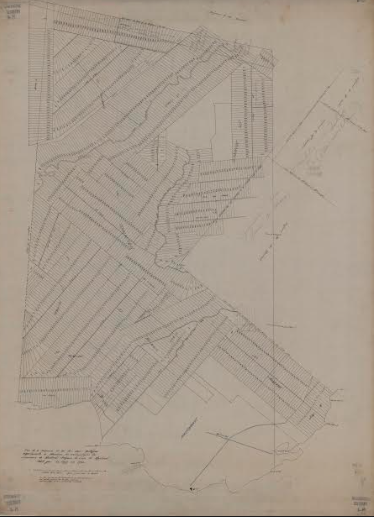

MAPPING ARCHIVES:
MOHAWK LAND DISPOSESSION
BY SULPICIAN PRIESTS
Visualize how contractually promised land was taken from the Mohawk of Kanehsatà:ke
over the course of 200 years.
540km2
1830
200
2%
Indigenous land granted
Terre autochtone concédée
Parcels Distributed
Parcelles de Terrain Distribuées
Years
Années
Land Remains for Kanehsatà:ke
Des terres Restent Pour Kanehsatà:ke
INDIGENOUS LAND GRANTED
Terre Autochtone Concédée
Search the database by
Years
Années
-
Sulpician Priests
French text.
Sold or Conceded to
French text.
Registration Number
French text.
With origininal deed of sale
French text.
No lots in the cadaster match your query.
INTRODUCTION
540 square kilometers of Indigenous land, divided into 1830 individual parcels, were gradually allocated
to European settlers over a span of two centuries. Today, a mere fraction, less than 2% of the original
land, remains for the Mohawk of Kanehsatà:ke (the Kanehsatakeró:non). This research presents what
dispossession looks like in the historical Seigneurie du Lac-des-Deux-Montagnes, situated within the
present day Laurentides administrative region of Quebec, Canada.
The area gained national attention during the Oka Crisis, also known as the siege of Kanehsatà:ke, when
the Mohawk people took a courageous stand against the Sureté Quebec (SQ), the Royal Canadian Mounted
Police (RCMP), and the Canadian Army. Their goal was to protect their sacred lands from being
transformed into a golf course for Oka residents. This intense 78-day military standoff not only shook
the nation at its core but also laid bare the enduring and deeply unjust structures underlying
contemporary land-based conflicts.
But the Oka crisis is just the tip of the iceberg. The roots of this conflict stretch back nearly three
centuries.
In the early 1700s, the Sulpicians were granted around 540 km2 of land by the King of France. The
purpose was to establish the Seigneurie du Lac-des-Deux-Montagnes and displace a Mohawk group that had
converted to Catholicism, known as the "Mission Indians," to distance them from burgeoning settler towns
on the island of Montreal. Yet, Mohawk oral traditions and archaeological evidence point to another
faction of Mohawk (the Kanehsatakeró:non) having inhabited the land long before the Sulpicians' arrival,
and the French land grant.
The Sulpicians and the British assured the Mohawk that the land in the Seigneurie du
Lac-des-Deux-Montagnes was theirs to live on. In 1721 the Mohawk made the Two Dog Wampum as a chain of
friendship to confirm this commitment and bind the Sulpicians to their responsibilities and obligations.
In the words of Mohawk Chief Aughneetha, Montreal Feb. 8, 1787
“our Priest (in conjunction with the Clergy of the Seminary of Montreal) told us we should remove
once
more with our Families, for that it was no longer proper that any Indians should live on this
Island,
and that if we would consent to go and settle at the Lake of Two Mountains we should have a large
tract
of land for which we should have a Deed from the King of France as our property, to be vested in us
and
our Heirs forever, and that we should not be molested again in our habitations. Altho’ it was very
inconvenient to us to be quitting our houses and small clearings, yet the desire of having a fixed
property of our own induced us to comply, and we accordingly set out and took possession of the Land
assigned to us, and as was the custom of our Forefather, we immediately set about making a Belt
(which
we now deliver to you)” Mohawk Chief Aughneetha, Montreal Feb.
8, 1787.
Two dog Wampum as described by Mohawk Chief Aughneetha.
Although the Mohawk repeatedly delivered this Two Dog Wampum to British officials, officials to honor
their promise and protect the land from white settlement, the British upheld that the Sulpician priests
were the sole owners of the land. As the Mohawk of Kanehsatà:ke’s rights and title to the land were
never formally recognized, they became dependent upon the Sulpicians to hold for them “in trust.”
However, the Sulpicians broke their obligations and sold 98% of the land to settlers, the descendants of
whom still live on the land and celebrate the Sulpician’s heritage today.
HOW WAS
CONTRACTUALLY PROMISED LAND TAKEN FROM THE MOHAWK OF KANEHSATÀ:KE?
Once a Seigneurie was granted, the “seigneur” or lord commissioned a surveyor to create a cadaster,
mapping out the lots designated for concession. The lot numbers, along with the names of the settlers
(known as "censitaires") and any subsequent transactions, were recorded in a registry called the
"terrier." Additionally, the seigneur often included taxation information, referred to as "cens and
rents," in another registry called the "censier." For more than two centuries, the Sulpicians
meticulously documented every property transaction they made with settlers in these land registries.

The Seigneurie du Lac-des-Deux-Montagnes, initially a small
mission, evolved into a tool of colonization as the Sulpicians, acting as land developers,
distributed cleared land to settlers to enhance their wealth. To manage their land holdings
effectively, they commissioned Louis Guy, the general surveyor, to create the first cadaster in
1798, greatly improving tax collection and administration.
By reconstructing the historical cadaster of the Seigneurie du Lac-des-Deux-Montagnes and locating the
initial deeds of sale and concession for each individual lot, we can analyze and understand the rhythm,
geographical distribution, and spatial dynamics of these transactions. This information provides
valuable insights into the colonization process and its significant impact on the people of
Kanehsatà:ke.
THE SCALE OF DISPOSESSION
Although the size of lots granted to settlers varied over time, we can observe two distinct periods.
From 1780 to 1860, the average lot granted to a settler measured 76 acres on average. To provide some
context, 76 acres of land is equivalent to 57 American football fields or…
THE WIDTH OF MONT-ROYAL
THE LENGTH OF THE JACQUES-CARTIER BRIDGE
HALF OF CENTRAL PARK
At the end of the seigneurial regime in 1858, the lots granted to settlers became significantly smaller (36
acres on average). This coincides with the urban development of the municipality of Oka.
THE RHYTHM OF DISPOSESSION
Land distribution did not occur uniformly over time. Instead, settlement happened in sharp bursts
lasting approximately 10 to 30 years. These bursts can be identified across three distinct phases in the
historical record.
The first phase of settlement was from 1780 to 1809 (with a notable peak
around 1790). Most of the settlers were French farmers. They established their homes in the
fertile regions around côte St-Joseph, côte de la Baie, and les Eblouis, gradually expanding
northward. These areas are collectively referred to as "la mouvance,". During this time, the
Sulpicians collected feudal taxes known as "cens and rentes" based on their claimed
ownership of
the land.
The second phase of settlement was short but intense. 28,000 acres of land granted in just
10 years, from 1820 to 1829. That is equivalent to 21,200 football fields or slightly larger
than the entire present-day municipality of Oka. This significant increase in land
allocation aligns with the Sulpicians' implementation of the British monarchy's plan to
bring British settlers to the Seigneurie du Lac-des-Deux-Montagnes. These British settlers
established their homes in the northwestern part of the seigneury. The North River ("La
Rivière-du-Nord") served as a natural buffer between the British and French settlements.
The third phase of settlement occurred between 1860 and 1889, marking the end of the
seignorial regime in 1858. During this period, the lots granted were the first instances of
legal land sales in the Seigneurie. Settlers could either purchase new lots and gain full
ownership of the land or buy the lots they had been leasing. The increase in acres granted
during this time could also be attributed to the significant number of Algonquin families
who were removed from Kanehsatà:ke to Miniwaki between 1858 and 1870, and Kanehsatakeró:non
families who were relocating to Gibson in 1881, freeing up more land for settlement.
HOW MUCH PROFIT WAS GENERATED?
It’s hard to say how much was made because land sale amounts were not consistently recorded. Based on
the evidence we have gathered, this visual illustrates the different funding streams the Sulpicians had
between 1780 and 1960.
Question your property rights by entering your address and examining its ties to colonization.
Address not found.
Location is not within research area.
Profits generated
It’s hard to say how much was made because land sale amounts were not consistently
recorded. What we do know is:
Between 1790 and 1824, Quebecois historian Christian Dessureault (1979) estimates
that the Sulpicians made 290 027 livres (4 818 907 $ in 2023) collecting taxes (le
champart, les banalités, les droits casuels , les cens et rentes).
In 1859, The Canadian federal government payed a first installment of 157 413 CA$
(when the seigneurial system was abolished in 1854.)
Despite the abolition of the seigneurial regime 80% of the censitaires (the settlers
paying to use the land) ended up paying “rentes constituées“ for the next 80 years.
The abolition of the seigneurial regime granted the seigneurs full possession of
domain lands in the municipality of Oka, to which were added the unconceded spaces
in the Seigneury. This provision of the law testifies to the legislator's very favorable
attitude towards the seigneurs and his desire to preserve their property rights at all
costs, even if it meant depriving the Kanehsatakeró:non of even more land.
In 1935, the National Commission for the Repurchase of Seigneurial Rents (SNRRS)
paid 51 835 CA$ (1 131 730 CA$ in 2023) the trustees of the commercial property of
Saint-Sulpice. This money served to redress the Sulpicians finances in a moment
where a series of bad investments had placed them under governmental trusteeship
from 1937 to 1960.